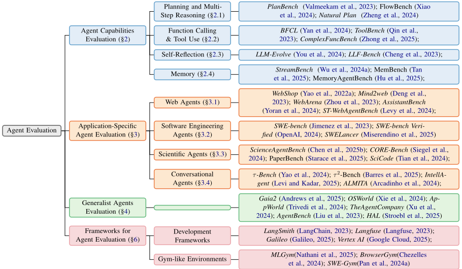
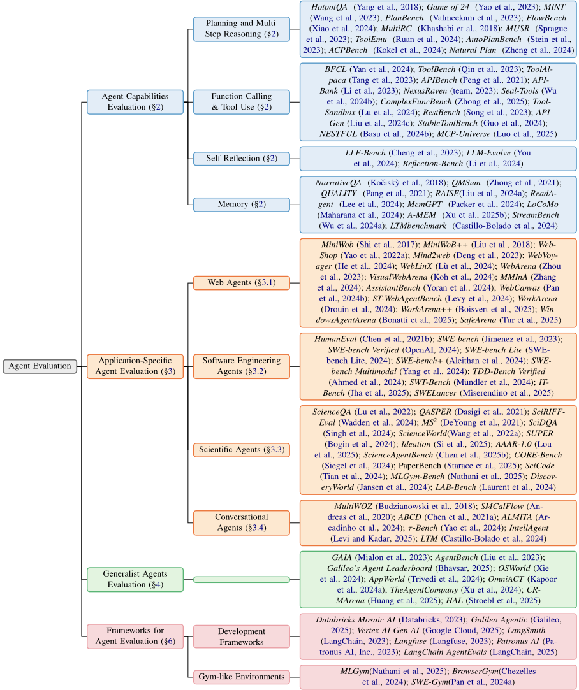

基于 LLM 的 Agent 评测综述
这是首篇系统综述 LLM-based Agent 评测方法的论文。它指出 Agent 具备规划、工具调用与自主决策能力，传统面向静态文本输出的评测已不适用，需要能衡量多步决策与动态环境交互的新范式。论文从五个视角组织分析：核心能力（规划、Function Calling、自我反思、记忆）评测、Web/SWE/科学/对话等应用型基准、通用 Agent 评测、基准核心维度（数据构建、环境、接口、指标、安全）横向分析，以及 LangSmith、Langfuse 等开发者评测框架对比。关键结论：评测正转向更真实的动态环境与持续更新的 live benchmark；SWE-bench Verified 顶部成绩约 80% 接近饱和，而 SWE-bench Pro 上模型仍低于 25% Pass@1；成本效率、安全合规、细粒度可扩展评测以及 LLM 与 harness 解耦评测是当前关键空白。
LLM-based Agent 能自主规划、推理、调用工具并与动态环境交互，但传统针对静态 LLM 文本输出的评测范式无法衡量其序列决策与环境交互能力；且该领域基准与框架爆发式增长、缺乏系统梳理。论文要解决的问题是：首次全面映射 Agent 评测版图，为开发者、基准构建者、实践者与研究者提供结构化参考，并识别未来研究必须填补的关键空白。
采用系统性文献综述方法（多库检索 + 前后向引文滚雪球 + 领域专家验证），从五个视角组织：(1) Agent 核心能力评测：规划与多步推理、Function Calling 与工具使用、自我反思、记忆（episodic/semantic/procedural）；(2) 应用型评测：Web（Mind2Web、WebArena）、SWE（SWE-bench 系列、Terminal-Bench）、科学、对话（τ-bench）Agent 基准演进；(3) 通用 Agent 评测（Gaia、OSWorld、AgentBench、HAL）；(4) 基准核心维度横向分析：数据构建策略、静态 vs 动态环境、交互接口（代码/终端、工具、GUI）、指标（任务完成、pass^k、guardrail）；(5) 开发者评测框架（LangSmith、Langfuse、Vertex AI、AgentEvals 等）在最终响应/逐步/轨迹级评测上的能力对比。
综述报告：SWE-bench Pro（1,865 个人工验证任务、41 个仓库）上模型性能仍低于 25% Pass@1，凸显长程复杂代码修改的局限
综述报告：SWE-bench Verified 顶部模型成绩已达约 80%，该事实标准基准接近饱和
综述报告：SWE-Lancer 收集 1,400 个 Upwork 自由职业任务、总报酬超过 $1M，结果暴露长期推理与决策差距
综述报告：deep research agent 评测中，采用 agent-as-a-judge 的研究显示 agents 达到人类性能的 50-70%
综述报告：IntellAgent 合成基准与 τ-Bench 结果呈高相关性；LTMbenchmark 显示配备长期记忆系统的短上下文 LLM 可匹敌或超过更大上下文窗口的模型
自称首篇对 LLM-based Agent 评测的全面综述（the first comprehensive survey）。区别于单点基准工作，其贡献在于：五视角分类体系、对代表性基准在数据构建/环境/接口/指标/安全五个维度的横向对比（Table 1）、对开发者评测框架（最终响应/逐步/轨迹级评测、reference-based vs reference-free）的系统对比（Table 2）、可操作的基准选型建议（附录 E），并提炼出 realistic evaluation 与 live benchmarks 两大趋势，以及成本效率、安全合规、细粒度评测、LLM 与 harness 解耦评测等未来方向。
相关度级别：high
命中能力域：3.5 评测与可靠使用 | 3.3 Agent 架构与工具使用 | 3.1 上下文工程与记忆
理由：论文主题与团队 3.5 域（评测与可靠使用）完全重合：团队核心关注'产出质量与可靠性的评测保障'，该综述正是 Agent 评测的一站式地图，覆盖基准选型建议、评测框架对比、pass^k 稳健性与 guardrail 合规指标、成本效率度量等可直接落地的方法论。其工具调用评测演进（BFCL 各版本到基于真实 MCP server 的前沿基准）与 LLM/harness 解耦评测思路直接服务 3.3 域（Agent 架构与工具使用）；记忆与长上下文评测（episodic/semantic memory、LoCoMo、StreamBench、LTMbenchmark）对应 3.1 域（上下文工程与记忆）。对构建代码生成/审查、知识库问答、测试辅助 Agent 的团队，这是选基准、搭评测流水线、设计质量指标体系的高价值参考。
建议动作：深入精读并做内部分享
arXiv:2503.16416v2 [cs.AI] 2026年4月23日
基于大语言模型（LLM）的Agent评估综述
Asaf Yehudai 1,2 , Lilach Eden 2 , Alan Li 3 , Guy Uziel 2 , Yilun Zhao 3 , Roy Bar-Haim 2 , Arman Cohan 3 , Michal Shmueli-Scheuer 2
1 耶路撒冷希伯来大学 2 IBM研究院 3 耶鲁大学 {Asaf.Yehudai, Guy.Uziel1}@ibm.com {lilache, roybar, shmueli}@il.ibm.com {haoxin.li, yilun.zhao, arman.cohan}@yale.edu
基于大语言模型（LLM）的智能体（Agent）代表了人工智能（AI）领域的范式转变，使自主系统能够在与动态环境交互的同时进行规划、推理和工具调用。本文对这类能力日益增强的Agent的评估方法进行了首个全面综述。我们从五个视角对Agent评估领域进行分析：（1）Agent工作流所需的核心LLM能力，如规划和工具调用；（2）特定应用的基准测试（benchmark），如Web Agent和SWE Agent；（3）通用型Agent的评估；（4）对Agent基准测试核心维度的分析；以及（5）面向Agent开发者的评估框架与工具。我们的分析揭示了当前的趋势，包括向更真实、更具挑战性的评估转变，以及基准测试的持续更新。我们还识别出未来研究必须解决的关键空白——特别是在评估成本效益、安全性和鲁棒性，以及开发细粒度、可扩展的评估方法方面 1 。
大语言模型（LLM）近来取得了显著进展，能够应对各种具有挑战性的任务。然而，LLM 是静态的，其知识固定不变，且仅限于文本到文本的交互。基于 LLM 的 Agent 以 LLM 为骨干来弥补这些不足：将其集成到多步骤工作流中，并为其配备外部工具（Wang et al., 2024a）。因此，LLM Agent 能够执行计算、检索最新信息，并与其环境进行交互。至关重要的是，它们能够在真实世界场景中自主地规划、执行并调整复杂策略。这种自主行动能力使它们能够解决曾经超出人工智能（AI）能力范围的问题，并在众多不同领域解锁创新应用。
1 我们的 GitHub 仓库跟踪该领域的工作。
从静态模型向自适应、交互式 Agent 的转变，呼唤一种评估基于 LLM 的 Agent 的新范式。此类评估必须超越对 LLM 文本输出的度量，进而评估 Agent 在动态环境中进行序贯决策与运行的能力。这就需要基准测试（benchmark）来评估 Agent 通过一系列动作与交互完成用户任务的能力。此外，基准测试必须与 Agent 能力共同演进，以容纳新类型的任务和领域。
在本综述中，我们首次对基于 LLM 的 Agent 评估进行了概览。我们旨在通过梳理当前的评估格局并识别未来研究的关键空白，使开发者、基准测试创建者、从业者和研究人员从中受益。
我们首先讨论 LLM Agent 基本能力的评估（§2），这些能力包括规划、工具调用、自我反思和记忆。随后，我们评述针对几类主要 Agent 应用的基准测试与评估策略：Web Agent、软件工程 Agent、科学 Agent 和对话 Agent（§3）。接着，我们介绍用于评估通用型 Agent 的基准测试与排行榜（§4）。进而，我们定义并分析 Agent 基准测试的核心维度（§5）。§6 评述了面向 Agent 开发者的现有评估框架。这些框架与 Agent 的开发环境相集成，并在整个开发周期中支持对 Agent 的评估。最后，我们以讨论（§7）作结，探讨 Agent 评估的当前趋势与未来研究方向。图 1 直观地概括了本综述的结构。
基于大语言模型（LLM）的 Agent 由一个骨干 LLM（backbone LLM）和一个 Agent 外壳（agent harness）构成 (Yao et al., 2022b)。因此，评估 Agent 任务所需的 LLM 核心能力集，对于理解基于 LLM 的 Agent 的潜力与局限至关重要。每种能力既可以被单独评估，也可以作为完整 Agent 工作流的一部分加以评估。在此，我们简要介绍四种此类核心 Agent 能力。在附录 §B 中，我们对其中每一种能力提供了更详细的评述。

规划与多步推理（Planning and Multi-Step Reasoning）使 Agent 能够将问题分解为更小、更易于管理的子任务，并构建通向解决方案的策略性执行路径 (Gao et al., 2023a)。
需要多个逻辑步骤的 LLM 推理基准测试（benchmark），例如 HotpotQA (Yang et al., 2018; Cobbe et al., 2021; Suzgun et al., 2022)，已被用于评估 ReAct 等基于 Agent 的方法。更专门的规划基准测试，例如 PlanBench (Valmeekam et al., 2023)，对经典规划任务加以改造以评估 LLM，并揭示其在长期规划方面的差距 (Stein et al., 2023)。面向 Agent 的规划基准测试则进一步评估 Agent 遵循结构化工作流的能力 (Xiao et al., 2024)，或其处理以自然语言表述的现实世界规划任务的能力 (Zheng et al., 2024)，并聚焦于带可验证约束的长程规划 (Zhang et al., 2026)。结果表明，即使是最先进（SOTA）的模型也难以胜任长程规划。
函数调用与工具调用（Function Calling & Tool Use）是 Agent 提供最新且符合上下文的准确响应的一项基础能力 (Qin et al., 2023; Tang et al., 2023)。函数调用涉及多个无缝协同工作的子任务，包括意图识别、函数选择以及参数-值对映射。
早期的工具调用基准测试聚焦于这些子任务，提供的是参数被显式预定义的、相对简单的单步交互。ToolAlpaca (Tang et al., 2023)、ToolBench (Qin et al., 2023) 以及 Berkeley Function Calling Leaderboard v1 (BFCL) (Yan et al., 2024) 等基准测试代表了这一早期阶段，它们依赖合成数据与基于规则的匹配来度量通过率、结构准确性等指标。
BFCL 的后续版本（v2 与 v3）引入了多轮交互、组织级工具与多步逻辑，强调持续的状态管理。此外，NESTFUL (Basu et al., 2024b) 引入了调用依赖于先前调用的情形，而 ComplexFuncBench (Zhong et al., 2025) 则呈现了需要隐式参数推断、遵循用户自定义约束以及高效长上下文处理的场景。
为了更好地反映真实世界场景，近期的评估正变得日益智能体化（agentic）(Patil et al., 2025a)，要求更长的交互，并通过从真实的 MCP 服务器获取资源来扩展领域和工具的数量 (Anthropic, Nov 2024)。当前两个前沿基准测试——Scale 的 MCP Atlas (Bandi et al., 2026) 和 ToolDecathlon (Li et al., 2026)——进一步推动了这一方向。尽管模型取得了显著进步，这些基准测试仍然构成挑战。
自我反思（Self-Reflection）使 Agent 能够基于反馈动态调整推理或动作，从而实现自我纠正 (Renze and Guven, 2024a)。
早期的评估工作将现有基准测试改造为多轮反馈循环，以衡量 LLM 的自我纠正能力 (Renze and Guven, 2024b; Huang et al., 2024; Shinn et al., 2023; You et al., 2024)。在智能体场景中，诸如 LLM-Evolve (You et al., 2024) 之类的工作将过去的反馈复用为上下文示例（in-context examples）来评估自我反思。类似地，LLF-Bench (Cheng et al., 2023) 利用反馈来评估多样化环境中的决策制定。尽管有这些努力，用于评估自我反思的标准化基准测试或方法论仍然是一个关键空白。
记忆机制使 LLM Agent 能够在长程交互中管理信息并进行推理 (Park et al., 2023)，并支持不同的记忆类型：情景记忆（episodic，过去的交互）、语义记忆（semantic，事实性知识）和程序性记忆（procedural，操作性信息）(Hatalis et al., 2023)。
早期研究采用长上下文基准测试 (Liu et al., 2024b; Pang et al., 2021) 来评估记忆机制 (Packer et al., 2024; Xu et al., 2025b)。最近，专门面向智能体记忆的基准测试已被提出。对于情景记忆，基准测试评估 Agent 如何利用先前的交互和反馈，以在多会话智能体任务中支持持续改进 (Wu et al., 2024a; He et al., 2026)。对于语义记忆，基准测试评估检索有效性和长程理解能力，并揭示出现有方法在维持长程一致性和处理动态记忆方面仍然受限 (Tan et al., 2025; Hu et al., 2025; Wu et al., 2025)。
面向特定应用的智能体（application-specific agents）领域正在不断扩展，越来越多的专用智能体涌现于各类任务与领域之中，例如网页智能体、软件智能体、游戏智能体、具身智能体、搜索智能体和科学智能体（Wang et al., 2024a）。在此，我们聚焦于四个具有代表性且突出的应用。我们在回顾这些智能体的同时，也隐式地涉及了若干核心的基准测试维度，例如数据构建、环境类型和评估指标，我们将在 §5 中对此进行系统讨论。
网页智能体处理与网页相关的任务，包括电子商务、信息搜索和个人助理任务。早期工作提出了交互选项有限的简化仿真环境 (Shi et al., 2017; Liu et al., 2018)。例如，WebShop (Yao et al., 2022a) 模拟在线购物任务，涵盖从商品搜索到结账的全过程。
近年来，该领域转向更加真实的评估环境。目前使用最广泛的离线环境与沙箱化在线环境分别是 Mind2Web (Deng et al., 2023) 和 WebArena (Zhou et al., 2023)。这些环境构成了当前大多数评估工作的基础。Mind2Web 提供了一个包含跨多个领域真实网站的离线环境，支持丰富的用户交互（例如点击、选择或在任意元素中输入），并可通过将预测操作与金标准动作进行对比来实现中间目标评估。相比之下，WebArena 引入了一个动态环境，其特点是包含跨多个领域的功能完备的网站，并辅以各类辅助工具和知识来源。它还定义了多样的长时程人类任务，并配有相应的功能正确性测试。
后续工作在这些环境的基础上评估网页交互的特定维度，重点关注多轮对话 (Lù et al., 2024)、由知识工作者执行的办公与企业工作流 (Drouin et al., 2024; Boisvert et al., 2025)，以及跨站点、耗时较长的任务 (Yoran et al., 2024)。另一些工作则对评估过程加以改进，提供对智能体性能更细粒度的分析 (Pan et al., 2024b)，或采用 LLM-as-a-judge 方法实现更具语义性、与人类判断更对齐的评估 (Xue et al., 2025)。尤为重要的是，Levy et al. (2024) 强调了安全性与可信性，通过评估策略合规性与风险缓解来实现，而这些对于真实世界部署至关重要。
一条重要的研究方向强调现代网页的多模态特性，相关基准测试要求智能体整合视觉与文本信息，通常通过图形界面进行交互 (Koh et al., 2024; Zhang et al., 2024)。值得注意的是，WebVoyager (He et al., 2024) 因其真实的多模态在线评估而获得了显著的商业关注。然而，近期工作表明其性能估计过于乐观，并提出 Online-Mind2Web 作为一种更严格的替代方案，该方案对当前智能体而言仍具有挑战性 (Xue et al., 2025)。
软件工程（SWE）智能体的评估始于衡量 LLM 基础编码能力的基准测试（benchmark）(Chen et al., 2021b; Austin et al., 2021)。这些早期的 benchmark 聚焦于简短、自包含、针对特定算法的任务，因而不足以应对真实世界 SWE 任务的全部复杂性。
SWE-bench (Jimenez et al., 2023) 的提出正是为了弥补上述不足，它提供了一个以真实 GitHub issue 为基础的端到端评估框架。每个任务包含详细的 issue 描述、完整的仓库上下文、可执行环境（例如 Docker）以及验证测试，使智能体能够自动生成并验证代码补丁。若干后续工作指出了评估中存在的问题，例如过于特化或无关的单元测试、描述不明确的 issue，以及有问题的环境配置，并因此提出了新的变体 (SWE-bench Lite, 2024; Xia et al., 2024; OpenAI, 2024; Aleithan et al., 2024)。其中采用最广泛的 SWE-bench Verified (OpenAI, 2024) 经过了大量人工筛选与验证，得到一个包含 500 个样本的高质量子集。它还通过容器化环境对执行过程进行标准化，并提供难度标注，使评估更具可复现性和可解释性。这些改进使 SWE-bench Verified 成为评估 SWE 智能体的事实上的 benchmark。
在 SWE-bench 取得成功之后，多语言 (Zan et al., 2024; Yang et al., 2025) 和多模态 (Yang et al., 2024) 版本相继被提出。一些互补性的 benchmark 探索了更多 SWE 任务，包括从 GitHub issue 生成并验证测试的能力 (Ahmed et al., 2024; Mündler et al., 2024)，或解决真实世界的 IT 自动化任务 (Jha et al., 2025)。值得注意的是，Terminal-Bench (Merrill et al., 2025) 聚焦于交互式终端使用，评估智能体的命令行熟练程度。
更近期的 benchmark 则朝着更具挑战性、更贴近现实的评估方向推进。SWE-Lancer (Miserendino et al., 2025) 从 Upwork 收集了 1,400 个自由职业任务，总报酬超过 100 万美元。这些任务既包括技术性修复，也包括管理决策，通过经验证的测试或与人类管理者所选方案的对比来进行评估。结果揭示了在长期推理与决策方面的差距。类似地，SWE-bench Pro (Deng et al., 2025) 引入了 1,865 个经人工验证的任务，横跨 41 个代码仓库，通常需要进行多文件编辑并耗费数小时的工作量。模型性能仍低于 25% Pass@1，凸显了当前在处理长程、复杂代码变更方面的局限。
科学 Agent 通过整合领域知识与科学工具，实现核心研究任务的自动化。对这类 Agent 的评估已从基础推理基准测试（benchmark）发展为评估多样化科学研究能力的综合性框架。早期工作聚焦于知识回忆与推理 (Clark et al., 2018; Lu et al., 2022; Wang et al., 2022a)，以及文献理解 (Dasigi et al., 2021; Lee et al., 2023; DeYoung et al., 2021)。诸如 SciRiff (Wadden et al., 2024) 等较新的基准测试则将范围拓展至跨科学领域的指令遵循。
近期进展已将重心转向开发与评估能够加速科学研究的科学 Agent。新的基准测试覆盖了完整的研究流程：(1) 科学构思：评估 Agent 生成新颖的、专家级研究想法的能力，强调创造性、相关性与科学可行性 (Si et al., 2025)。(2) 实验设计：AAAR-1.0 (Lou et al., 2025) 等基准测试评估系统性的实验规划、假设的提出、研究方法的恰当运用以及实验流程的严谨性。(3) 代码生成：SciCode (Tian et al., 2024)、ScienceAgentBench (Chen et al., 2025b)、CORE-Bench (Siegel et al., 2024) 与 PaperBench (Starace et al., 2025) 等基准测试检验 Agent 生成准确且可执行的科学代码的能力 (Chan et al., 2025)。(4) 同行评审：评估 Agent 能否生成有实质内容的高质量评审意见 (Chamoun et al., 2024)。最终，该领域正朝着涵盖完整研究周期的基准测试发展，进而实现对创新性科学发现的评估。
对话式 Agent（Conversational Agent）是指旨在与用户进行目标导向的多轮对话以完成特定任务的 Agent，例如预订航班或解决客户支持问题。该领域建立在面向任务的对话系统（Task-Oriented Dialogue Systems, TODS）的基础之上，并将其从纯文本任务扩展到需要环境交互的现实世界任务。
早期的 TODS 基准测试聚焦于跨不同领域的多轮对话 (Budzianowski et al., 2018; Andreas et al., 2020) 以及不同的用户意图 (Chen et al., 2021a)。然而，这些基准测试仅限于文本交互。为解决这一问题，Sierra 提出了 τ-Bench (Yao et al., 2024)。该基准测试评估 Agent 在遵守特定领域策略的前提下，通过有效利用 API 工具与模拟用户交互以完成任务的能力。τ-Bench 涵盖零售和航空客户服务等领域。然而，它在规模和用户模拟设置方面存在局限，且仅关注粗粒度的端到端指标，忽视了策略违规和对话流程错误。τ²-Bench (Barres et al., 2025) 通过引入电信（Telecom）领域来应对这些局限——在该领域中，用户利用工具在共享的动态环境中执行操作——并增加了一个组合式任务生成器，以编程方式创建多样化且可验证的任务。
尽管 τ-Bench 是该类别中最具主导地位的基准测试，但它建立在先前实现基准测试自动创建与动态评估的工作基础之上。IntellAgent (Levi and Kadar, 2025) 提出了一种自动化流程，用于从数据库模式和策略文档生成合成测试场景。他们展示了 τ-Bench 与其合成基准测试结果之间的高度相关性。ALMITA (Arcadinho et al., 2024) 采用了一种混合方法：从用户意图和一系列由 LLM 生成的中间图出发，随后进行人工筛选，以生成多样化且真实的客户支持场景。
与大语言模型（LLM）从任务专用模型演变为通用模型的过程类似，智能体（Agent）也在从面向特定应用向通用智能体转变 (Bandel et al., 2026b)。此类任务需要综合性的能力，从规划、推理、工具调用，到网页交互、文件处理、代码执行等等。这一转变推动了两种互补的通用智能体评估方法的发展。
第一种方法旨在通过提出天然需要广泛能力的基准测试（benchmark）来弥合这一差距。此类基准测试中的代表性工作是 Gaia (Mialon et al., 2023)。Gaia 由真实世界的问题组成，这些问题需要推理、多模态处理、网页浏览以及熟练的工具调用等能力。随着时间推移，模型在 Gaia 上的表现不断提升，使基准测试中较简单的部分趋于饱和，从而凸显了对更新版本的需求。Andrews et al. (2025) 提出了 Gaia2，这是一个包含电子邮件、即时消息和日历等应用的移动环境。所需能力的集合也得到扩展，纳入了处理歧义、噪声、时间约束以及多智能体协作的能力。
这项工作延续了一类在完整计算机环境中评估智能体的基准测试。OSWorld (Xie et al., 2024)、AppWorld (Trivedi et al., 2024) 以及其他工作 (Kapoor et al., 2024a; Bonatti et al., 2025) 测试智能体跨应用执行复杂任务、管理控制流以及在真实环境中保持稳定表现的能力。它们的不同之处在于智能体与环境交互的方式：在 OSWorld 中，智能体通过 UI 进行交互；而在 AppWorld 和 Gaia2 中，智能体则使用代码和 API 调用。
第二种通用智能体评估方法依赖于将多个任务专用基准测试统一为一个。AgentBench (Liu et al., 2023) 引入了涵盖操作系统操作、数据库、游戏和家务任务的交互式环境，突出了灵活性和基于工具的问题求解等核心技能。HAL (Holistic Agent Leaderboard; Stroebl et al., 2025) 为包括编程和网页在内的跨领域基准测试提供了统一平台。然而，这种方法并不支持在任意基准测试环境中使用相同的智能体 harness 进行评估。Harbor 和 Exgentic 旨在通过提供带有统一协议的框架来解决这一问题，以实现通用智能体评估 (Harbor Framework Team, 2026; Bandel et al., 2026a)。这些工作代表了迈向整体化、标准化、跨环境智能体评估的第一步 (Lacoste et al., 2026)。
前几节回顾了按智能体类型和应用领域组织的基准测试（benchmark）。本节采用更宏观的视角，沿若干共同的正交维度对基准测试进行分析：数据整理、环境、接口、度量与安全性。这一分析揭示了共同的结构模式与空白。在表 1 中，我们基于这些维度对代表性的基准测试进行了比较。
数据整理 高质量的基准测试很少完全依赖人工整理的数据；大多数采用混合整理策略。例如，SWE-bench Verified 通过人工验证对最初收集的 GitHub issue 进行精炼，以提升该基准测试的鲁棒性与可靠性。类似地，AppWorld 使用由 100 个虚构用户组成的合成“世界”来构建任务，但通过程序化检查对其进行验证。其他基准测试（如 Mind2Web）则从真实世界的交互日志中获取数据，随后再进行清洗与标注。相比之下，GAIA 专门利用人工来设计并验证问题，确保问题具有挑战性且无歧义——这些问题对人类而言在概念上很简单，但对智能体而言则需要复杂的工具调用。这在两者之间引发了张力：一方面依赖人工标注来确保数据有效性，另一方面需要将数据整理与验证流程自动化，从而实现可扩展、可适应的评估。这一张力凸显了对能够在不损害质量的前提下将该流程自动化的方法的需求。
环境 评估环境通常分为两类：静态与动态。静态环境（如最初的 Mind2Web）依赖离线轨迹或缓存的网页，智能体在其中预测下一个动作，但不会影响状态。尽管这类环境具有可扩展性，却无法捕捉错误的级联效应：错误的动作不会产生任何下游后果，从而遗漏了可能最终导致任务失败的累积性故障。相反，动态环境允许智能体与实时运行或模拟的世界进行交互（例如，用于 SWE 的 Docker 容器、用于 Web 智能体的浏览器沙箱），其动作会改变智能体所观测到的状态，从而能够诊断长程任务中的故障模式。随着智能体能力不断增强，基准测试必须采用动态环境，以评估智能体与环境进行长程交互的能力。
交互接口 接口定义了智能体与环境之间的通信协议，并规定了动作空间与观测空间。我们将基准测试划分为三种主要接口：代码与终端接口要求智能体生成可执行脚本，例如 Python、Bash 或 SQL。该接口在 SWE 与科学类基准测试中占主导地位，其成功取决于逻辑与语法的正确性。工具接口将动作限制为预定义的函数调用。τ -Bench 和 AppWorld 等基准测试依靠遵循 schema 的工具调用来实现其目标。图形用户界面
| Benchmark | Data | Env. | Interface | Metric | Safety |
|---|---|---|---|---|---|
| SWE-bench Ver. SWE-Lancer Mind2Web WebArena PaperBench TAU-Bench AppWorld GAIA | Hybrid Hybrid Hybrid Hybrid Hybrid Hybrid Hybrid Human | Dynamic Dynamic Static Dynamic Dynamic Dynamic Dynamic Dynamic | Code Code GUI GUI Code Tools Tools Mix | Unit Tests End-to-end Action Match Mix End-to-end State Match State Match Answer Match | No No No No No Yes No No |
| Benchmark | Data | Env. | Interface | Metric | Safety |
（GUI）通过可访问性树（accessibility tree，例如 HTML DOM）或可视化 UI 来模拟人类交互。面向 Web 和消费者的应用类基准测试利用这种模态来评估视觉定位（visual grounding）以及计算机或网页导航能力。
**指标** 最普遍使用的指标是任务完成（task completion），但其具体实现因应用和预期输出而异。对于 SWE 任务，其输出是一段可正常运行的代码，因此采用 SWE 领域的度量方式，例如基于执行的单元测试。对于需要修改环境状态的任务，如 τ-Bench，则采用与黄金状态（gold state）进行状态匹配的方法来评估修改的正确性。对于多步推理任务，如 GAIA，则使用答案匹配来对照黄金标准验证无歧义的简短回答。这种指标上的差异凸显了为确保基准测试有效性而采取针对性验证步骤的必要性（Zhu et al., 2025）。值得注意的是，这类二元结果指标不足以反映智能体的中间进展，因而需要细粒度的评估方案（参见 §7）。
**安全性与鲁棒性指标** 尽管大多数基准测试优先考量能力，但安全性和鲁棒性对于企业采用至关重要。鲁棒性通常通过 pass^k 来量化，即智能体在全部 k 次独立运行中均能成功的任务所占比例。除鲁棒性之外，企业级智能体还必须遵守严格的策略，例如数据隐私和访问控制，而标准基准测试很少对这些方面进行测试。例如，SWE-Lancer 本身并不会惩罚危险行为，除非这些行为干扰了目标行为的复现。未来的基准测试必须整合“护栏”（guardrail）指标，对通过不合规操作（例如删除生产数据库）取得任务成功的智能体予以惩罚。
为满足对 LLM 智能体进行系统性评估的日益增长的需求，若干通用框架应运而生，为开发者提供了用于持续监控、评估、错误分析和性能优化的工具。与前几节讨论的基准测试（benchmark）不同——那些基准测试使用固定场景和标准化测试数据集来评估已完全开发好的系统——这些框架则融入开发流程之中，支持灵活的自定义场景设计，并覆盖开发与部署两个阶段的广泛通用用例。
支持评估多种类型智能体的框架有很多，包括 LangSmith (LangChain, 2023)、Langfuse (Langfuse, 2023)、Google Vertex AI 评估服务 (Google Cloud, 2025)、Arize AI 的评估框架 (Arize AI, Inc, 2025)、Galileo Agentic Evaluation (Galileo, 2025)、Patronus AI (Patronus AI, Inc., 2023)、W&B Weave (Weights&Biases, 2023)、LangChain 的 AgentEvals (LangChain, 2025)；主要面向检索增强生成（RAG）类任务设计的 Databricks Mosaic AI Agent Evaluation (Databricks, 2023)；面向多智能体系统的 Botpress Multi-Agent Evaluation System (Kargwal, 2025) 与 AutoGen (Dibia et al., 2024)；等等。
所有评估平台都对智能体轨迹提供持续监控，评估任务完成率、延迟、执行速度等关键性能指标，在某些情况下还包括吞吐量和内存占用 (LangChain, 2023)。一些框架（包括 Langfuse 和 Google Vertex AI）利用了 OpenTelemetry (Blanco, 2023) 可观测性框架及其基础设施。
除可观测性之外，每个框架还在多个粒度层级上应用质量评估方法：
最终响应评估（Final Response Evaluation）。框架通常引入基于 LLM 的评判器（judge），依据预定义的标准（如忠实性或礼貌性）来评估智能体的响应，其中一些框架还提供专有的评判模型（例如 Databricks Mosaic 和 PatronusAI）。此外，大多数平台支持可自定义的评估指标，从而能够针对特定领域评估输出质量与相关性。最终响应评估速度快、成本低且易于自动化，因此非常适合大规模监控与回归测试。然而，它对智能体行为的洞察有限，因为它无法评估复杂工作流中的中间决策、执行效率或失败原因。
逐步评估（Stepwise Evaluation）。大多数框架支持对智能体的单个步骤进行细粒度评估，例如大语言模型（LLM）生成、工具调用和路由决策，从而实现错误定位，并支持对多步执行在何处以及如何失败进行系统性分析。一种常见做法是使用预定义或可定制的评判器（judge）对每个步骤进行独立评估，这类评判器通常是基于 LLM 的模型或轻量级分类器，用于评估正确性、相关性或指令遵循等质量属性。此外，许多框架还会通过验证工具选择、参数模式（schema）和输出可用性来执行针对特定工具的评估。为了使评估与智能体结构更好地对齐，Arize Phoenix 提供了智能体特定的步骤模板，将评估标准定制适配到特定阶段，例如路由、规划、检索或反思。
这些方法假设每个动作都可以在孤立情况下得到有意义的评估，而忽略了步骤之间的依赖关系。为了弥补这一空白，Galileo Agentic Evaluation 引入了面向目标进度的行动推进度量（action advancement metric），用于衡量每个步骤是否成功地为用户定义的目标做出贡献或朝该目标推进。
基于轨迹的评估（Trajectory-Based Assessment）。一些平台（例如 Google Vertex AI 和 LangSmith）还支持基于轨迹的评估，这类评估超越了单个步骤的范畴，分析智能体如何逐步推进以完成任务。当前的方法大致分为两大类。基于参考（Reference-Based）的方法将轨迹与预期的最优路径进行比较，衡量观察到的动作序列与黄金（gold）动作序列之间的对齐程度。LangSmith、Vertex AI 和 AgentEvals 等平台支持多种对齐模式，包括精确匹配、部分匹配、无序匹配和子集匹配。AgentEvals 进一步通过基于图的评估对此加以扩展：对于将智能体建模为图的框架，它评估智能体是否访问了预期的节点和转移，而不要求在扁平的工具调用序列上进行对齐。然而，基于参考的方法存在固有的局限，因为通常存在多条有效路径，而且手动指定参考往往不可行。无参考（Reference-Free）方法则使用基于 LLM 的评判器在无预定义黄金路径的情况下评估轨迹质量，直接从观察到的序列中评估连贯性、效率或目标导向性等属性。
| Framework | Stepwise Assessment | Monitoring | Trajectory Assessment | Human in the Loop | Synthetic Data Generation | A/B Comparisons |
|---|---|---|---|---|---|---|
| LangSmith (LangChain) | ✓ | ✓ | ✓ | ✓ | × | ✓ |
| Langfuse (Langfuse) | ✓ | ✓ | × | ✓ | × | ✓ |
| Google Vertex AI evaluation (Google Cloud) | ✓ | ✓ | ✓ | × | × | ✓ |
| Arize AI's Evaluation (Arize AI, Inc) | ✓ | ✓ | × | ✓ | ✓ | ✓ |
| Galileo Agentic Evaluation (Galileo) | ✓ | ✓ | × | ✓ | × | ✓ |
| Patronus AI (Patronus AI, Inc.) | ✓ | ✓ | × | ✓ | ✓ | ✓ |
| AgentsEval (LangChain) | × | × | ✓ | × | × | × |
| Mosaic AI (Databricks) | ✓ | ✓ | × | ✓ | ✓ | ✓ |
| Framework | Stepwise Assessment | Monitoring | Trajectory Assessment | Human in the Loop | Synthetic Data Generation | A/B Comparisons |
一个核心的方法论考量是在基于参考的评估与无参考评估之间做出选择。基于参考的方法提供精确性与可复现性，但依赖于预定义的预期行为。无参考方法通常依赖于基于 LLM 的评判器，以牺牲可靠性为代价换取更大的灵活性。这种张力同样体现在评判器的设计上：通用评判器覆盖面广但精确度较低，而任务特定评判器在其目标标准上表现出色，但代价是适用范围较窄。
支持能力。除质量评估之外，各类框架还提供面向数据管理和实验的支持能力。大多数框架提供集成的标注工具，并支持人在回路（human-in-the-loop）评估，从而能够从生产日志中提取评估数据集。Patronus AI 和 Databricks Mosaic 等平台还支持利用专有种子数据进行合成数据生成。当前框架还支持 A/B 对比，可对多次运行中的输入、输出和指标进行并排分析，某些情况下（例如 Patronus AI）还可对不同实验设置的聚合结果进行并排分析。
表 2 列出了用于智能体评估的关键框架，以及它们对本节所讨论的各项评估特性的支持情况。
总体而言，当前的评估框架展现出巨大价值，但仍面临若干开放性挑战。首先，尽管对单条轨迹的分析已得到良好支持，但从大规模运行集合中提炼洞察仍然困难。因此，在大规模场景下理解智能体失败的根本原因尚缺乏支持。A/B 对比通过允许对不同实验设置进行并排分析，部分解决了这一问题。然而，将结果差异因果地归因于特定步骤或决策目前尚无法实现。其次，当前框架忽视了评估过程本身所产生的成本，尤其是在使用昂贵的 LLM 评判器（LLM judges）对大量轨迹进行规模化评估时。这凸显了对更高效评估流程的需求，以及采用更优资源分配技术的必要性。最后，大多数当前框架缺乏对安全性和策略合规性评估的内置支持（参见 §7）。
类 Gym 环境（Gym-like Environments）为 Agent 评估提供了受控的、可交互的环境仿真。这类框架受 OpenAI Gym（Brockman et al., 2016）启发——OpenAI Gym 最初是为训练和评估强化学习（Reinforcement Learning）算法而设计的——如今已被改造用于 LLM Agent 的训练与评估，通过逼真的任务仿真使 Agent 能够与动态环境进行交互。此外，这些框架支持在各种基准测试（benchmark）之间进行标准化评估，目前已有面向 Web Agent（Chezelles et al., 2024）、AI 研究 Agent（Nathani et al., 2025）以及 SWE Agent（Pan et al., 2024a）的环境。
本综述识别出塑造当前 Agent 评估格局的两个关键趋势：
真实且具有挑战性的评估。尽管早期评估通常采用简化的静态环境，但如今已明显转向更真实、更复杂的基准测试（benchmark）。Web Agent 已从基础仿真演进为动态的真实世界环境，例如 WebArena。在软件工程领域，SWE-bench 等基准测试利用真实的 GitHub issue，超越了合成编码任务。此外，人们对通常由训练有素的人类专家完成的长程任务（long-horizon tasks）的兴趣日益浓厚，这推动评估更贴近真实世界的专业工作流程。这一变化反映出人们日益需要评估 Agent 在真实场景中获取实际价值的能力、对其局限性进行压力测试，并引导其进步。
动态基准测试（Live Benchmarks）。LLM 与 Agent 发展的快速步伐，要求采用具有适应性且持续更新的评估方法。静态基准测试很快就会过时、饱和并被弃用。作为回应，我们看到“live”基准测试的兴起。例如，BFCL 的多个版本，以及 SWE-bench 家族的持续完善（Verified、Pro 等）。这些持续的调整服务于多个目的：匹配 Agent 日益增强的能力、解决先前版本的不足（例如通过开展人工验证并改进成功指标），以及适应不断演进的研究生态系统，例如基于 MCP 的工具调用。这种动态基准测试方法对于在这一快速发展的领域中保持相关性至关重要。
我们也认识到当前 Agent 评估中存在一些未来研究必须解决的关键缺口。
推进细粒度评估。许多当前的基准测试依赖于粗粒度的端到端成功指标，这类指标虽然有助于衡量整体性能，却难以诊断 Agent 的具体失败。这种粒度上的缺失掩盖了对工具选择和推理质量等中间决策过程的洞察。要解决这一局限，需要开发针对 Agent 任务执行轨迹的标准化细粒度评估指标。未来的工作应探索详细的、逐步式的评估，以提供更丰富的反馈并指导有针对性的改进。
成本与效率指标。当前的评估往往优先考虑性能，而忽视了成本与效率的度量。这种侧重可能会在无意中催生能力强大但资源消耗巨大的 Agent，从而限制其实际部署 Kapoor et al. (2024b)。未来的评估框架应将成本效率作为核心指标，跟踪诸如 token 使用量、API 开销、推理时间以及总体资源消耗等因素。建立标准化的成本指标将有助于引导开发在性能与运营可行性之间取得平衡的 Agent。
规模化与自动化。对静态的、人工标注的评估数据的依赖带来了显著的可扩展性挑战。这种方式资源消耗巨大，且由此产生的基准测试在这一快速发展的领域中很快就会过时。这一不足凸显了对可扩展的自动化评估的需求，这可以借助合成数据生成技术来解决。另一条途径是采用 LLM 或 Agent 作为裁判（Judge）来实现评估自动化 Zhuge et al. (2024)。这种方法不仅减少了对资源密集型人工标注的依赖，还有望捕捉 Agent 性能中更为细微的方面。
安全与合规。当前的基准测试对安全性、可信度和政策合规的关注不足。尽管早期的努力已开始涉及这些维度，但评估仍然缺乏针对对抗输入鲁棒性、偏见缓解以及组织和社会政策合规的全面测试。未来的研究应在基准测试中纳入安全指标，并开发模拟真实世界场景的安全基准测试，尤其是在可能出现涌现风险的多智能体（multi-agent）场景中 (Hammond et al., 2025)。这可以确保 Agent 不仅有效，而且安全可靠。
解耦大语言模型（LLM）与 Harness 评估。当前大多数 Agent 基准测试将两个不同的评估对象混为一谈：（1）骨干 LLM 的固有能力，以及（2）Agent Harness（又称 scaffold）的设计。厘清二者对于实现对性能提升的系统性归因至关重要。Harbor 和 Exgentic 等工作通过在不同模型与 Agent Harness 设置之间对 Agent 评估进行标准化，已开始着手解决这一问题。未来的工作应当开发受控评估协议，使每个因素都能被独立变化，从而实现系统性比较，并将各个组件——无论是 LLM 能力、Harness 设计，还是记忆或规划等特定模块——对整体 Agent 性能的贡献分离出来。
本综述对基于大语言模型（LLM）的 Agent 评估这一不断发展的领域进行了概述，梳理了其从在简化环境中评估孤立能力，到在真实、动态且具有挑战性的环境中对 Agent 进行评估的发展历程。尽管已取得显著进展，但仍存在若干挑战。未来的研究应聚焦于开发超越总体成功率的细粒度、可扩展的评估方法，并为负责任的部署建立针对成本效率、安全性和鲁棒性的标准化指标。为提供实践指导，我们在附录 §E 中给出了可操作的基准测试（benchmark）推荐。
尽管本综述对基于 LLM 的 Agent 评估领域提供了全面的概述，但必须承认，对这样一个快速发展的领域进行综述，本身就存在某些固有的局限性。
首先，基于 LLM 的 Agent 及其评估领域变化极为迅速。新的基准测试（benchmark）、评估框架、Agent 架构和研究成果正以前所未有的速度发表。尽管我们已尽力纳入截至撰写时最新且最具影响力的工作，但本综述不可避免地只是一个快照。一些非常新近或即将出现的进展可能未被纳入。正如摘要中所述，我们承诺持续维护一个不断更新的 GitHub 仓库，旨在随时间推移为社区缓解这一挑战。
其次，基准测试与框架的选取虽然力求具有代表性，但受限于该领域的广度。为保持清晰和聚焦，我们优先选择了能够体现关键趋势或涉及 Agent 评估重要方面的工作。因此，一些特定或小众的评估方法可能未得到详细论述。
第三，由于涵盖的主题广泛，对每个具体基准测试或框架的分析深度必然受到限制。需要对某一特定评估工具或方法有透彻理解的读者，建议参阅本综述中引用的原始研究文献。
最后，关于“未来方向”（§7.2）的讨论以及对“关键空白”的识别，本身就包含基于当前趋势的一定程度的前瞻与解读。尽管这些内容以我们对现有文献的分析为依据，但未来研究的实际走向以及这些被指出的领域的相对重要性仍将持续演变。
尽管存在这些局限，我们相信本综述对基于 LLM 的 Agent 评估的现状提供了有价值且结构化的综合梳理，可作为该领域研究人员、开发者和从业者的有用资源。
为确保本综述的全面性与有效性，我们采用了一套严谨的多阶段文献综述流程，旨在捕捉 LLM Agent 评估领域快速演变的格局。我们的方法包括三个主要阶段：系统性检索、结构化筛选与专家验证。
**检索策略与引文追踪** 我们最初的数据收集工作是对主要学术资源库与档案库进行系统性检索，包括 Google Scholar、ACL Anthology、HuggingFace Papers 和 arXiv。我们使用了一组有针对性的关键词及其组合，例如 "LLM agent evaluation"、"agent benchmark"、"tool use evaluation" 和 "web agent benchmark"。在确定开创性且被高频引用的工作后，我们采用了迭代的“滚雪球”（snowballing）技术。我们对这些种子论文同时进行了前向与后向引文追踪，以发掘奠基性的先行工作以及可能尚未被标准关键词索引的新兴方法。
**纳入与排除标准** 我们制定了严格的标准，以保持综述的聚焦性与质量。凡引入了新颖的基准测试（benchmark）、评估框架，或对基于 LLM 的 Agent 评估做出重要方法学贡献的论文均被纳入。反之，我们排除了以下工作：1. 提出了新的 Agent 架构，但对评估方法学没有明确贡献。2. 仅关注传统 LLM 评估（例如在静态数据集上的推理），缺乏动态、Agent 式或交互式组件。虽然顶级会议的录用被用作质量的主要指标，但我们也纳入了高影响力的预印本，以确保综述反映这一快节奏领域的最新进展。
**专家咨询** 为减少覆盖盲区并确保准确呈现特定子领域，我们咨询了与本文分类体系中关键类别相对应的领域专家（例如软件工程（SWE）与 Web Agent 研究人员）。我们还特别与领先基准测试的创建者以及主导性 Agent 架构的开发者进行交流，就所选定的稿件展开讨论。这一验证步骤确保我们的综述能够捕捉最先进评估协议中的细微之处。
在本附录中，我们对基于 LLM 的 Agent 能力评估作进一步展开。正文部分已呈现核心信息，而在此我们针对每个基准测试（benchmark）、其相互关系，以及各项能力的评估如何演进，提供更为详尽的阐述。
规划与多步推理构成了 LLM Agent 有效应对复杂任务能力的基础，它使 Agent 能够将问题分解为更小、更易于管理的子任务，并创建通向解决方案的策略性执行路径（Gao et al., 2023a）。
LLM 中的多步推理通常涉及执行顺序性的逻辑操作——通常需要 3-10 个中间步骤——以得出无法通过单步推理获得的解决方案（Cobbe et al., 2021; Yang et al., 2018; Suzgun et al., 2022）。这种对多步规划的基础性需求催生了专门的基准测试（benchmark）与评估框架，用于在多样化领域中系统地评估这些能力，涵盖：数学推理（GSM8K (Cobbe et al., 2021)、MATH (Hendrycks et al., 2021b)、AQUA-RAT (Ling et al., 2017)）、多跳问答（HotpotQA (Yang et al., 2018)、StrategyQA (Geva et al., 2021)、MultiRC (Khashabi et al., 2018)）、科学推理（ARC (Clark et al., 2018)）、逻辑推理（FOLIO、P-FOLIO (Han et al., 2024, 2022)）、约束满足谜题（Game of 24 (Yao et al., 2023)）、日常常识（MUSR (Sprague et al., 2023)）以及具有挑战性的推理任务（BBH (Suzgun et al., 2022)）。其中若干基准测试，特别是 HotpotQA、ALFWorlds 和 Game of 24，已被专门改造用于评估 ReAct 等基于 Agent 的方法；在这类方法中，规划与调用 Agent 所提出的工具在交互式问题求解场景中交替进行。
近期的工作已开发出更多针对 LLM 规划能力的专门化框架。ToolEmu (Ruan et al., 2024) 提出了一种基于模拟器的方法来评估使用工具的 Agent，揭示出成功的规划需要显式的状态跟踪以及从错误中恢复的能力。MINT 基准测试 (Wang et al., 2023) 评估交互式环境中的规划，表明即使是先进的 LLM 也难以完成需要多个步骤的长程任务。

PlanBench (Valmeekam et al., 2023) 提供了一个专门设计用于评估 LLM Agent 在多样化领域中规划能力的综合性评估框架，揭示出当前模型擅长短期战术性规划，但在战略性长程规划方面表现吃力。
与此相补充，AutoPlanBench (Stein et al., 2023) 专注于评估日常场景中的规划，表明即使是 SoTA 的 LLM Agent 也落后于经典的符号规划器。
FlowBench (Xiao et al., 2024) 评估工作流规划能力，重点关注专业知识密集型任务。ACPBench (Kokel et al., 2024) 专注于评估 LLM 的核心推理技能。
Natural Plan 基准测试 (Zheng et al., 2024) 旨在评估 LLM 如何处理以自然语言呈现的现实世界规划任务。SoTA 的 LLM Agent 在该基准测试上表现不佳，尤其是随着复杂度的增加。
这些基准测试凸显了实现有效 Agent 规划所必需的关键能力：(1) 任务分解，用于拆解复杂问题；(2) 状态跟踪与信念维护，用于实现精确的多步推理；(3) 自我纠错，用于检测错误并从中恢复；(4) 因果理解，用于预测动作结果；(5) 元规划，用于改进规划策略。
大语言模型（LLM）通过函数调用与外部工具进行交互的能力，是构建能够提供实时且符合上下文的准确响应的智能 Agent 的基础（Qin et al., 2023; Tang et al., 2023）。早期工作使用了针对性的工具，例如在具备检索能力的增强语言模型方法中所采用的检索（Lewis et al., 2020; Gao et al., 2023b; Nakano et al., 2021）。后续发展则纳入了更通用的工具，以 ToolFormer（Schick et al., 2023）、Chameleon（Lu et al., 2023）和 MRKL（Karpas et al., 2022）为代表。
函数调用涉及多个子任务，它们无缝协同工作。意图识别根据用户请求判断何时需要调用函数。函数选择为任务确定最合适的工具。参数-值对映射从对话中提取相关参数并赋值给函数参数。函数执行使用这些参数调用所选函数，以与外部系统交互。最后，响应生成对函数输出进行处理，并将其融入 LLM 对用户的回复之中。这一集成过程确保了 LLM 工作流中函数调用的准确性与高效性。
早期的评估工作提供了评估上述子任务的方法，但侧重于参数被显式给出的、相对简单的一步式交互。ToolAlpaca (Tang et al., 2023)、APIBench (Patil et al., 2025b)、ToolBench (Qin et al., 2023) 以及 Berkeley Function Calling Leaderboard v1 (BFCL) (Yan et al., 2024) 等基准测试（benchmark）便是这一阶段的典型代表，它们采用合成数据集和基于规则的匹配（例如通过抽象语法树）来建立通过率、结构准确性等基线指标。
然而，这些方法难以刻画真实世界场景的复杂性，真实场景可能包括多步对话、对话中未明确提及的参数，以及具有复杂输入结构和冗长繁复输出的工具。BFCL v2 和 v3 通过增加组织类工具并集成多轮、多步评估逻辑来弥补这些不足，提供了更为贴近现实的模拟，并凸显了持续状态管理的必要性。
与这一演进相辅相成，若干基准测试拓宽了评估的版图。例如，ToolSandbox (Lu et al., 2024) 与以往的基准测试不同，它引入了有状态的工具执行、隐式状态依赖、借助内置用户模拟器进行的在策略（on-policy）对话式评估，以及针对任意轨迹上中间里程碑和最终里程碑的动态评估策略。Seal-Tools (Wu et al., 2024b) 采用 self-instruct (Wang et al., 2022b) 方法来生成嵌套的工具调用，有效地对分层且相互依赖的交互进行建模。与此同时，API-Bank (Li et al., 2023) 通过利用基于对话的评估和大规模训练数据集，强调真实的 API 交互。像 NexusRaven (team, 2023) 这样的框架则聚焦于能够反映实践中所遇多样化挑战的通用工具调用场景，进一步丰富了这一版图。API-Blend (Basu et al., 2024a) 提出了一种综合方法，专注于识别、整理现有数据集并将其转换为大型语料库，用于对工具增强型 LLM 进行训练和系统性测试。API-Blend 模拟了涉及 API/工具检测、槽位填充（slot filling）以及对检测到的 API 进行排序等 API 任务的真实世界场景，同时为训练和基准测试提供了实用价值。RestBench (Song et al., 2023) 为探索利用多个 API 来应对复杂的真实世界用户指令提供了便利。APIGen (Liu et al., 2024c) 提供了一个全面的自动化数据生成流水线，用于合成经过分层阶段验证的高质量函数调用数据集。StableToolBench (Guo et al., 2024) 通过引入带有缓存和模拟器的虚拟 API 服务器来缓解 API 状态变化，从而应对函数调用评估所面临的挑战。
为了应对多步交互固有的复杂性，ComplexFuncBench (Zhong et al., 2025) 被专门设计用于评估需要隐式参数推断、遵循用户自定义约束以及高效长上下文处理的场景。NESTFUL (Basu et al., 2024b) 专注于增加复杂性，其方式是在嵌套的 API 调用序列上评估 LLM，其中一个调用的输出会作为后续调用的输入。
一个新兴的研究方向关注 Agent 能否通过交互式反馈进行自我反思并改进其推理，从而减少多步交互中的错误。这要求模型理解反馈并动态更新其信念，以便在长程轨迹上执行经过调整的动作或推理步骤。
早期衡量 LLM Agent 自我反思能力的工作通常是间接的，即将现有的推理或规划任务——例如 AGIEval (Zhong et al., 2023)、MedMCQA (Pal et al., 2022)、ALFWorld (Shridhar et al., 2021)、MiniWoB++ (Liu et al., 2018) 等——改造为多轮反馈循环，以观察模型在受限环境中能否在给定外部反馈的情况下识别或纠正自身的错误 (Renze and Guven, 2024b; Huang et al., 2024; Shinn et al., 2023; You et al., 2024; Sun et al., 2023; Liu et al., 2025)。改进程度通常通过判断最终答案是否得到纠正来衡量，这只提供了粗略的评估，且可能是一种定义不清的度量方式，因为所观察到的改进可能依赖于缺乏适当标准化的特定提示技术 (Huang et al., 2024; Liu et al., 2025)。
LLF-Bench (Cheng et al., 2023) 被提出用于为交互式自我反思建立标准化的基准测试（benchmark）。它包含多样化的决策任务，并将任务指令视为环境的一部分。为了减少过拟合，它允许对任务指令描述和 Agent 反馈进行随机化。
类似地，LLM-Evolve (You et al., 2024) 被提出用于在 MMLU (Hendrycks et al., 2020) 等标准基准测试上评估 LLM Agent 的自我反思能力。该方法通过收集带有反馈的历史查询并将其提取为上下文示例（in-context demonstrations），从而基于过往经验对 Agent 进行评估。为了针对不同反馈类型提供更细粒度的洞察，(Pan et al., 2025) 专门聚焦于编码 Agent，将 APPS (Hendrycks et al., 2021a) 和 LiveCodeBench (Jain et al., 2024) 等现有编码基准测试扩展到交互式设置。
从认知科学的视角出发，ReflectionBench (Li et al., 2024) 被设计用于评估 LLM 的认知反思能力，将反思分解为若干组成部分，例如对新信息的感知、记忆的使用、惊讶之后的信念更新、决策调整、反事实推理以及元反思。
除了上下文长度优化之外，记忆机制还能增强 agent 场景中的实时决策与学习，其关注点在于动作优化 (Liu et al., 2024a; Shinn et al., 2023; Wang et al., 2024b)。例如，Reflexion (Shinn et al., 2023) 在 HotPotQA (Yang et al., 2018) 和 ALFWorld (Shridhar et al., 2021) 等任务上跟踪成功率，而 RAISE (Liu et al., 2024a) 通过一个由两部分组成的记忆系统对 ReAct 框架进行了增强，并借助人工对质量指标和效率的评判来加以评估。类似地，KARMA (Wang et al., 2024b) 在家庭任务中测试记忆，采用成功率、检索准确率和记忆命中率等指标，展示了记忆机制如何在需要复杂推理和持久信息保持的多样化领域中显著提升 agent 性能。LTMbenchmark (Castillo-Bolado et al., 2024) 通过长时间、多任务且频繁切换上下文的交互来评估对话式 agent，以测试其长期记忆和信息整合能力。结果表明，尽管 LLM 在单任务场景中通常表现良好，但在交错任务中却难以应对；有趣的是，配备长期记忆系统的短上下文 LLM 能够达到甚至超越具有更大上下文窗口的模型的性能。
科学框架 作为任务级基准测试的补充，统一的评估框架被引入，用于在顺序化、端到端的研究工作流中对 agent 进行评估。这些工作涵盖了从 gym 风格的工作流模拟器（Nathani et al., 2025）、虚拟发现环境（Jansen et al., 2024），到聚焦特定领域的套件，例如用于生物学导向评估的 LAB-Bench（Laurent et al., 2024）。此类框架能够对实验设计、迭代式假设细化以及自主、创新性科学发现的核心能力进行整体性度量。
深度研究（Deep Research） 最近，由于广泛的商业化产品供应，处于搜索、网络与科学 agent 交汇点的研究型 agent 已变得十分常见。此类 agent 会先检索并综合信息，然后返回带有引用支撑的全面答案。这一过程构成了一项困难的评估任务，其中涉及多步骤、多方面且时间不敏感的考量。Patel et al. (2025) 提出基于三项核心功能来评估这些 agent：检索质量、知识综合与可验证性。Gou et al. (2025) 利用 agent-as-a-judge 进行评估，结果显示 agent 达到了人类性能的 50 - 70%。这是一个活跃的研究领域，已有大量相关工作（Wei et al., 2025; Chen et al., 2025a; Xu et al., 2025a; Bosse et al., 2025; Du et al., 2025）。
真实工作场所基准测试 通用智能体评估的另一个方向聚焦于具有不同角色与人设的真实工作场所。TheAgentCompany (Xu et al., 2024) 模拟了一家软件公司，智能体需要在其中浏览内部网站、编写代码并进行协作。CRMArena (Huang et al., 2025) 复现了客户关系管理（Customer Relationship Management, CRM）环境，要求智能体使用 UI 和 API、遵循领域政策，并整合多样化数据以完成企业级任务。
在智能体评估这一广阔领域中导航，是开展有效基准测试的先决条件。在本节中，我们将调研所得的发现提炼为面向从业者和研究人员的可操作建议。我们的遴选标准优先考虑社区采用程度、活跃的维护状态，以及近期来自领先 LLM 和智能体开发者的文献中所遵循的报告规范。
在这一领域中，基准测试（benchmark）的选择在很大程度上取决于环境的动态性以及智能体的模态。
SWE-bench Verified 仍然是评估编程智能体时占主导地位的黄金标准。然而，目前顶尖性能已达到约 80%，这表明它已接近饱和。
科学领域的评估高度依赖于具体任务。在正文中，我们尝试针对每项科学任务提及最佳选项。
对于需要在对话中进行稳健的用户模拟和工具调用的智能体而言，τ-bench 是社区标准。尽管当前模型在该基准测试（benchmark）上取得了很高的成功率，但它仍然是最常见的选择，目前尚未出现被广泛采用的替代方案来取代它。
对于通用智能体，推荐方案因任务侧重点和智能体的交互接口而异：